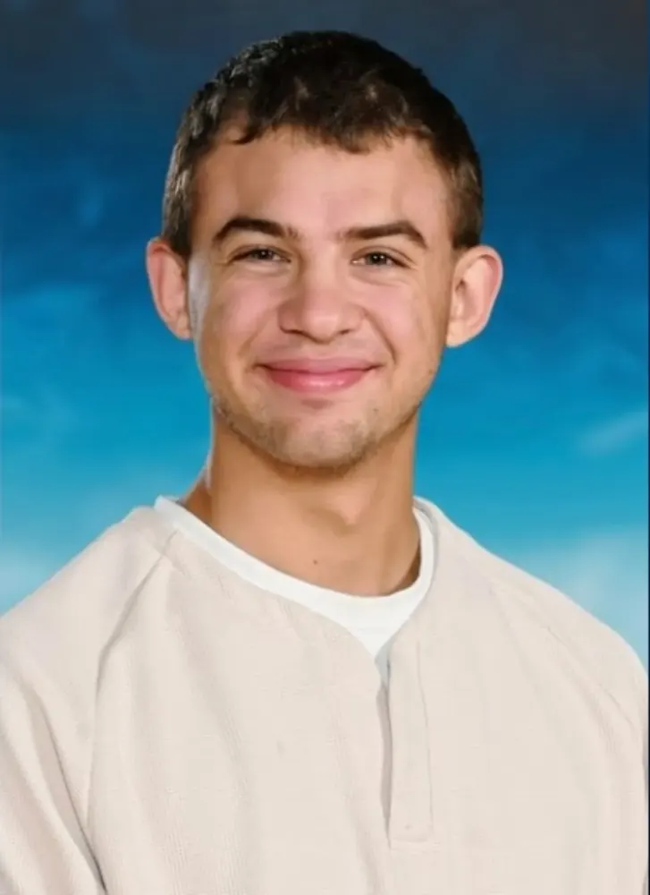
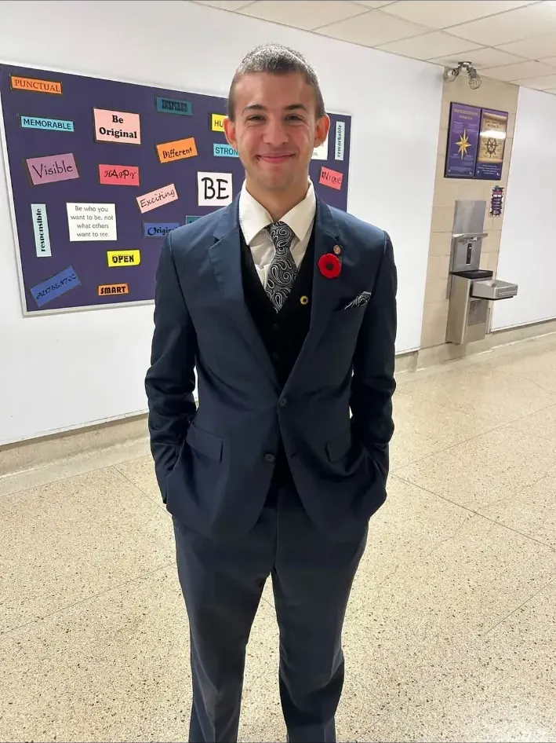
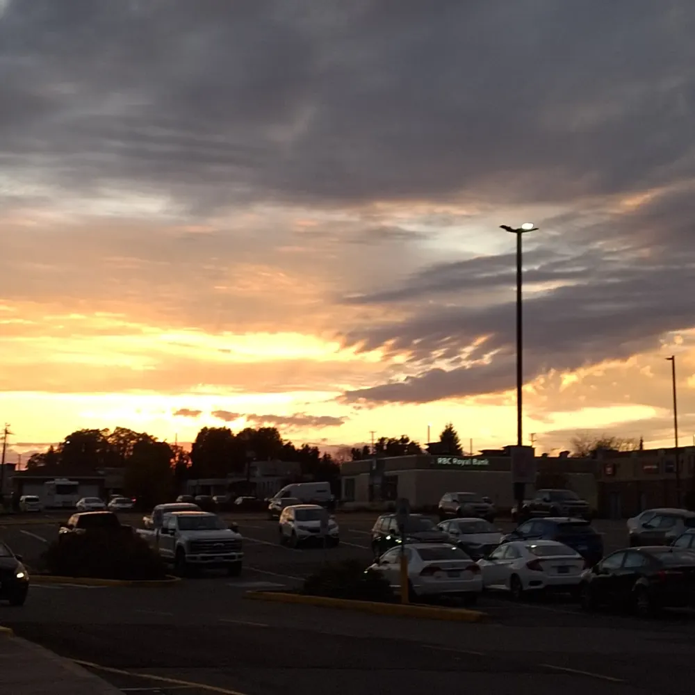

4-H
Participated in the Maple Syrup and Pizza clubs in Prince Edward County, developing practical skills through community-based youth programming.
Explore 2019 →
A life in progress.
Canadian student, entrepreneur and leader documenting my experiences, ideas, service and projects.
↓
I’m Dulten Richard, a Canadian student, Air Cadet instructor and co-founder of Bring Back Cadets.
I joined the Air Cadet Program in 2021. Since then, I have taught cadets, served in senior cadet leadership roles and spoken at the Canadian War Museum in 2025.
In November 2026, I co-founded Bring Back Cadets to advocate for youth opportunities. My interests include Canadian public policy, international affairs, entrepreneurship and rugby.
Professional profile ↗Do something that scares you every day.
In November 2026, Bring Back Cadets received news coverage following the announcement of additional funding for cadet programming.

A chronological record of my training, service, sport and advocacy.
Participated in the Maple Syrup and Pizza clubs in Prince Edward County, developing practical skills through community-based youth programming.
Explore 2019 →Joined the Air Cadet Program, beginning a journey through aviation, citizenship, teamwork and practical leadership.
Explore 2021 →Completed CAP 2 summer training. My high-school years also marked the beginning of my involvement in rugby, which I have played since Grade 9.
Explore 2023 →Participated in Rotary Adventure in Citizenship and continued my involvement by running the 2025 alumni Instagram page.
Explore 2025 →Served as acting squadron commander at 661 Squadron and subsequently transferred to 870 Vampire Squadron as a Warrant Officer Second Class. My responsibilities have included mentoring more than 15 cadets on parade nights.
Explore 2026 →Public policy, youth opportunity, entrepreneurship, leadership and sport.
Protecting access to youth development, mentoring and meaningful opportunities through Bring Back Cadets.
Canadian public policy, geopolitics, defence, diplomacy and the institutions that shape society.
Developing independent projects and exploring how ideas can become sustainable organizations.
Instruction, community involvement and responsibility for the people I work alongside.
Rugby since Grade 9, competitive indoor rowing and consistent physical training.
For interviews, speaking opportunities, professional introductions or thoughtful conversations about youth leadership and public life, get in touch.